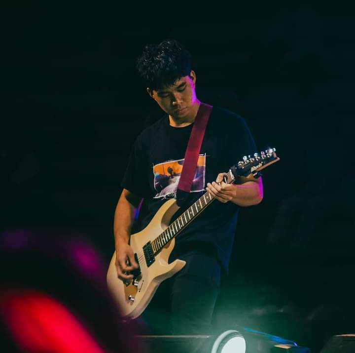
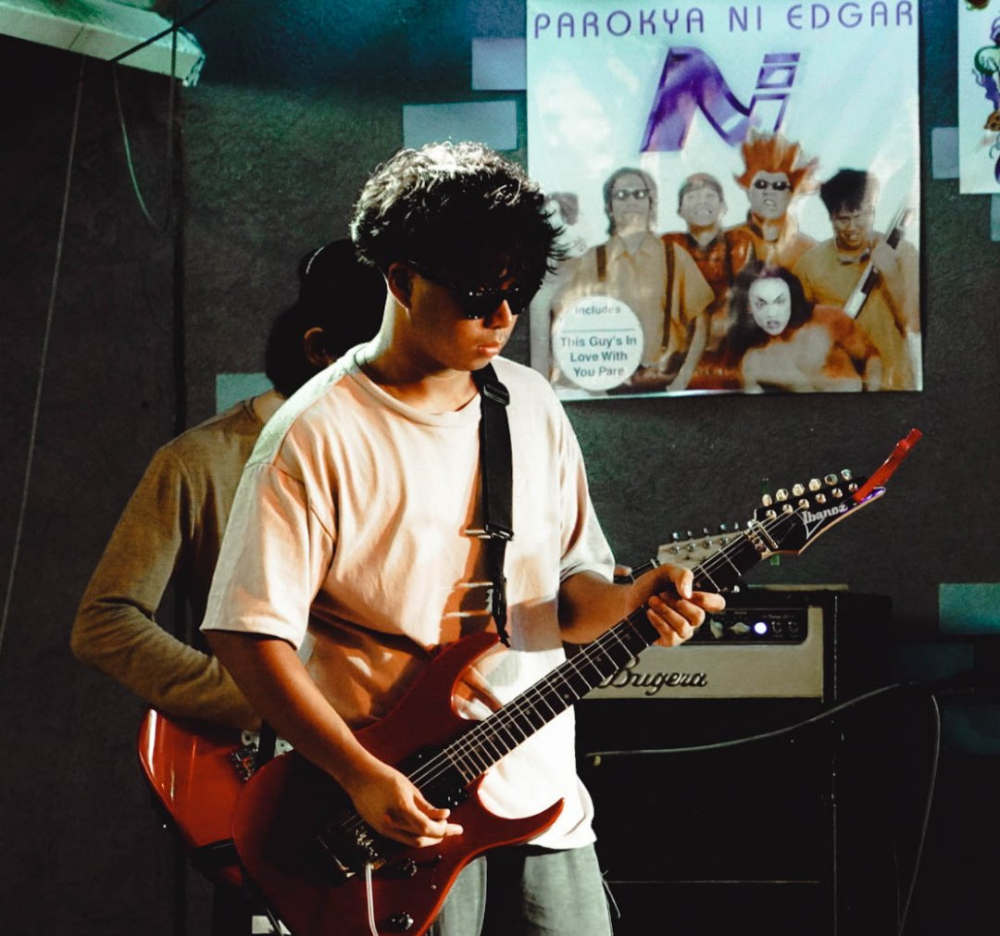

| Home | More about myself | |
|---|---|---|
More about myself
|
||

Senior High School Acquaintance party '23 Shirley |
||
|
Title: All Quiet on the Western Front
Cast:
Release date: September 12, 2022 Directed by: Edward Berger
|
||
|
Title: Bohemian Rhapsody
Artist: Queen Ratings: Pete Erskine of NME observed that It'll be interesting to see whether it'll be played in its entirety on the radio. It's performed extremely well, but more in terms of production than anything else |
||